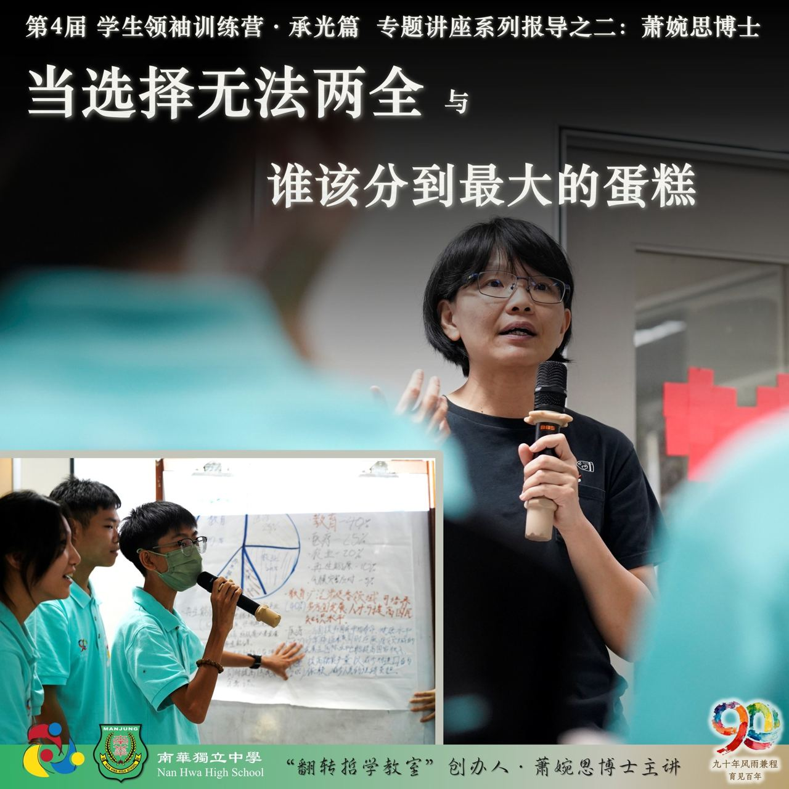
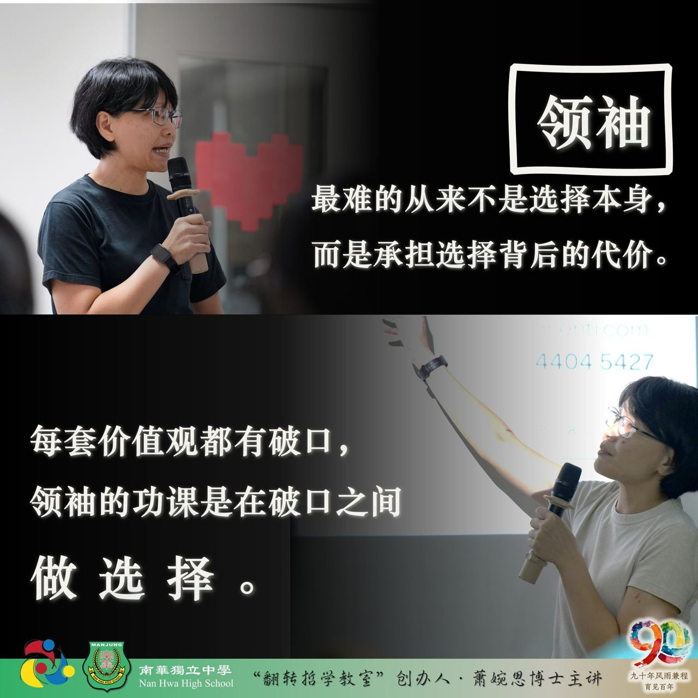
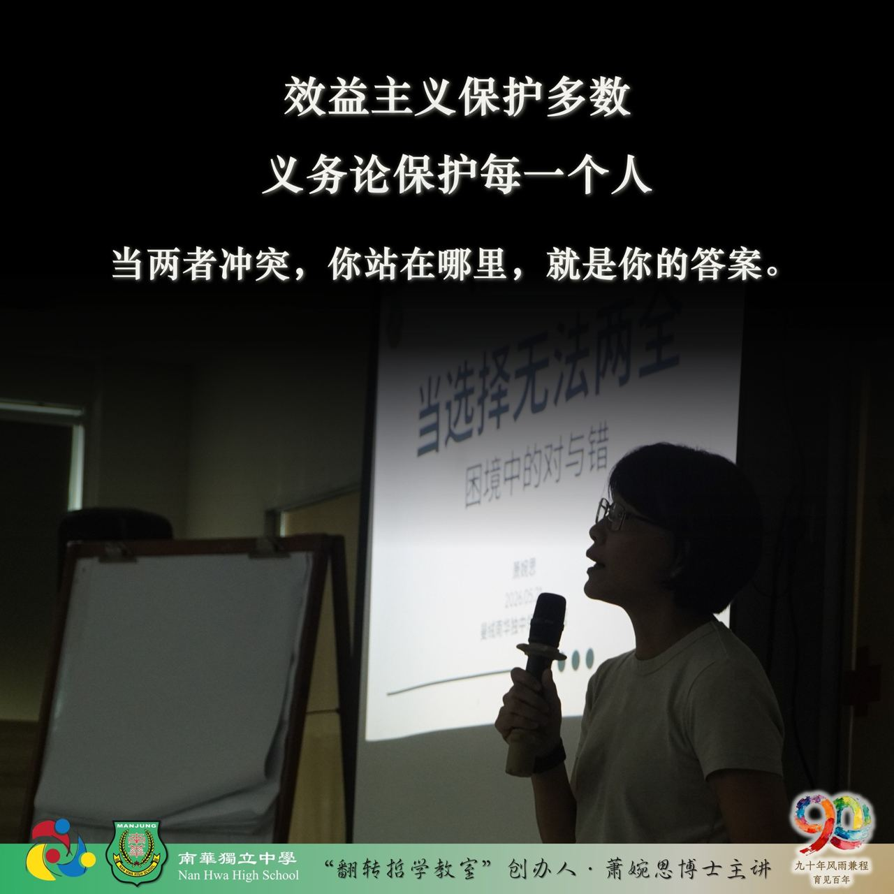
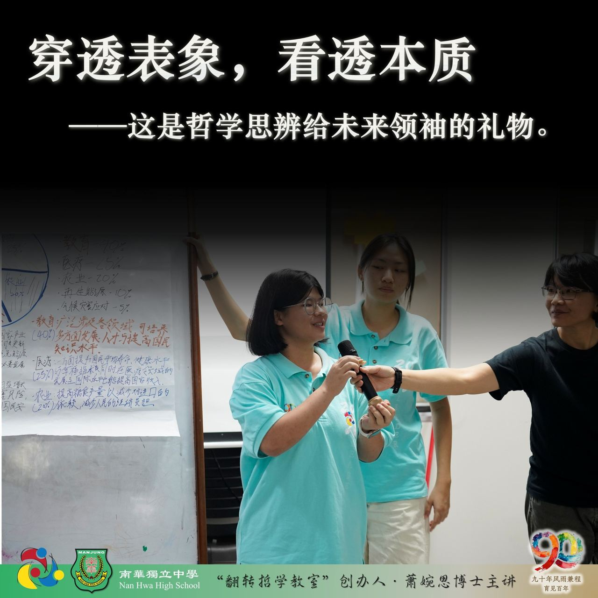

第四届学生领袖训练营 · 承光篇
第四届学生领袖训练营 · 承光篇
专题讲座系列报导之二：萧婉思博士
当选择无法两全 与 谁该分到最大的蛋糕
"最难的从来不是选择本身，而是你必须承担选择背后的代价。"截自《当选择无法两全》
"真正困难的不是选哪一边，而是在做选择时，你究竟代表谁在说话。"截自《谁该分到最大的蛋糕》
哲学思辨教育推广者萧婉思博士主持了两场互动式思辨活动，将现场转化为以学生为主角的思辨实验室，让大家褪下教科书与考试为标准答案的包袱，以极限局势模拟与高强度公开抗辩，考验未来领袖在面对没有标准答案的命题时，如何做出真实的判断。
思辨第一课《当选择无法两全——困境中的对与错》
"如果每一个决定都可能影响他人，我们该如何判断对错？"话音刚落，营员即刻被置入极端情境，在效益主义与义务论两套道德框架之间选边站。效益主义以"最大多数人的最大幸福"为判准，义务论则死守"人是目的而非工具"的底线——两者皆有代价，两者皆有破口。
活动并未止步于初始的道德直觉，而是层层叠加外部变量，制造认知失衡，测试营员价值底线的稳定度。随着情境不断升温，各组的筛选原则剧烈冲突，伦理立场在压力下持续位移。
"领袖最难的，从来不是选择本身，而是你必须承担选择背后的代价。"萧博士把这场思辨活动的总结凝成一枚书签，悄然落在未来领袖的人生书页之间。
思辨第二课《谁该分到最大的蛋糕？——公平、资源与正义的思辨课》
"若你不知道自己将成为社会中的哪一种人，你会希望生活在怎样的制度里？"
萧博士引入哲学家约翰·罗尔斯的"无知之幕"理论，引导营员剥离现实的既得利益，化身制度设计者，重新审视"公平"的本质。各组完成方案后，随即进入高强度的跨组公开质询，台上的制度设计者须当场回应针对公平性、系统漏洞与群体牺牲合理性的严厉追问。帷幕最终揭开，营员在亲历角色转换后，被追问了一道直击灵魂深处的大哉问：
你设计的制度，究竟是谁的乌托邦，又是谁的恶托邦呢？
复盘总结
董事长颜登逸先生全程参与并观察两场活动，并于结营时提及萧博士前瞻性教学的初衷："如果你们有从思辨活动中学习如何从多角度看问题，学习如何穿透表象、学会看透事物本质"——这正对应了南华独中向来所贯彻的办学方针“学会读书·学会做人·学会领导”中"批判性思维"的核心要求。
校长陈丽冰博士表示，学生们在思辨中若受到充分的引导与激发，所带来的正面影响无远弗届。本届营员经过一众导师的训练，所展露出的回答质量 、观察视角与认知格局的显著提升，亦是有目共睹的收获。



